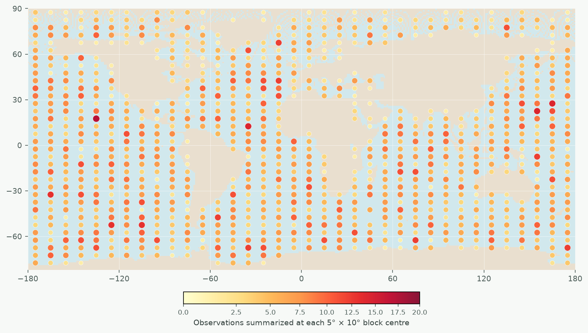
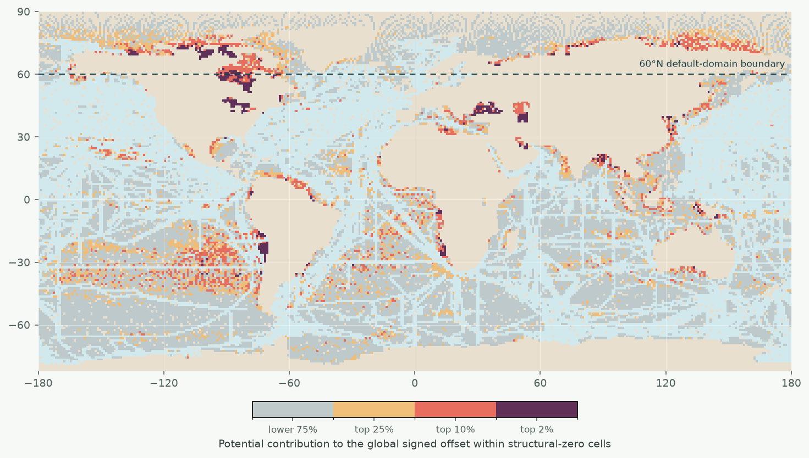

MAE
+1.855 +15.67% 15/15 worseInteraction 01
Where do 5,000 observations go—and where is risk left unresolved?
The first map shows the experimental input: how each rule allocates the same number of observations. It is a sampling map, not a performance map.
Design map · not model error

Random gives every candidate month-cell equal selection probability.
All strategies: n = 5,000 · 2005 · seed 0 · points summarize 5° × 10° blocks
1 · Change the allocation rule above
→
2 · Observe which ocean areas lose support
→
3 · Inspect where unsupported error affects the global offset
Supporting diagnostic · 2005
Where should a follow-up sampling experiment test first?
Colour appears only where the historical baseline assigns zero sampling probability. Darker cells combine a larger mean signed reconstruction error with a larger spherical area, so they contribute more to the global signed offset.
53.1%
of mapped ocean cells have zero historical support
49.2% by spherical area
49.2% by spherical area
Diagnostic, not a promise of improvement. This map identifies candidates for an add-observation experiment; it does not estimate the causal gain from sampling any one cell.
Outcome diagnostic · not marginal value

Interaction 02 · Core result
One estimate, four defensible questions.
The number changes because weighting, evaluation domain and candidate support define different estimands—not because the underlying run was hidden.
Default estimand
Historical density − random
Mean signed error difference
−0.473 µatm
RMSE
+1.310 +5.15% 12/15 worseBias direction
12/15 negative units Descriptive consistencyThe large original signed offset is estimand-sensitive. The stable default finding is the historical MAE penalty, not a universal global bias.
Interaction 03 · Supporting audit
The coverage result changes with sample count.
This panel is deliberately labelled as a non-default hidden-cell, full-domain, equal-cell audit. Δerror = coverage − random.
Supporting · hidden cells · full domain · equal-cell
Median absolute error
+0.670p99 absolute error
−4.720RMSE
−1.107Interaction 04
Technical details, available—not in the way.
Open only the audit you want to inspect. None of these panels adds a new model fit.
Month balance1,800 deterministic selection audits
Regridding auditNative-cell weighting sensitivity
15 year–fold distributionsDescriptive consistency, not formal significance
Three prespecified years × five exhaustive spatial folds. Each unit averages 20 paired sampling seeds. The units share one ESM run and are not independent Earth-system replicates.
Inspect the frozen JSON contract →Interpretability gateWhy SHAP is not shown as mechanism
Spatially grouped XGBoost models failed the prespecified out-of-fold generalization gate. SHAP artifacts were withheld because explaining a non-generalizing model would not establish a scientific driver.
The complete gate decision remains in the reproducible repository documentation.
Not yet supportedExplicit project boundary
Sea-ice-aware accessibility, cross-model robustness, buffered extrapolation, integrated-flux effects, cost-aware routing and direct real-ocean performance remain outside the present claim.